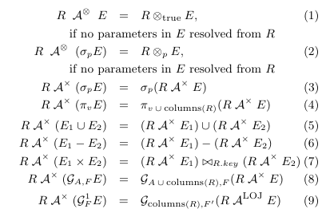

subquery
ref
- https://developer.aliyun.com/article/802290#slide-1
- https://www.alibabacloud.com/help/zh/polardb/polardb-for-mysql/user-guide/subquery-decorrelation
- https://segmentfault.com/a/1190000040833030
- https://zhuanlan.zhihu.com/p/60380557
- https://zhuanlan.zhihu.com/p/21177328157
子查询优化理论
- 子查询分为关联和非关联
- 对于非关联，子查询只需执行一次，即使不消除子查询，一般也没有性能问题
- 对于关联子查询，执行方式类似 nestloop，大多数场景下有性能问题，是首先需要关注的
- 子查询允许出现的位置
- 子查询可以以表达式的方式存在，所以语句中所有的表达式可以出现的地方，子查询都允许，例如
select * from customer limit (select max(i_item_sk) from item) offset (select 1);- 以表达式的方式出现的子查询，成为 scalar 子查询， 限定只能输出一行，多行则报错
- 标量在没有结果的时候，输出的是null，而不是空值，因为 scalar 必须有输出
- 子查询可以以表的方式出现，所以语句中，所有表允许出现的地方，子查询亦可以，此时不限制输出行数
- 以表的形式存在的时候，优化中可以看作一个表，参与join的正常的优化，但是也是需要判断是否存在关联字段
- 子查询可以以表达式的方式存在，所以语句中所有的表达式可以出现的地方，子查询都允许，例如
- 通用处理方案， 当前通用方案是基于 HyPer 和 sqlserver 的论文，引入一个新的表达式，对表达式应用规则， 然后进行子查询消除
- https://www.cse.iitb.ac.in/infolab/Data/Courses/CS631/2005/Project/ref/orthOptOfSubQueriesp571galindolegaria.pdf
- https://btw-2015.informatik.uni-hamburg.de/res/proceedings/Hauptband/Wiss/Neumann-Unnesting_Arbitrary_Querie.pdf

- 关联条件上推，以达到子查询中没有关联字段， 从而消除子查询
MySQL 子查询
drop table if exists students;
drop table if exists exams;
CREATE TABLE students (
id INT PRIMARY KEY,
name VARCHAR(255),
major VARCHAR(255),
year INT
);
CREATE TABLE exams (
sid INT,
course VARCHAR(255),
curriculum VARCHAR(255),
date DATE,
grade INT,
FOREIGN KEY (sid) REFERENCES students(id)
);
1. 关联子查询
SELECT
s.name,
e.course
FROM
students s,
exams e
WHERE
s.id = e.sid
AND e.grade = (
SELECT
MIN(e2.grade)
FROM
exams e2
WHERE
s.id = e2.sid
);
-> Nested loop inner join (cost=0.70 rows=1)
-> Table scan on s (cost=0.35 rows=1)
-> Filter: (e.grade = (select #2)) (cost=0.35 rows=1)
-> Index lookup on e using sid (sid=s.id) (cost=0.35 rows=1)
-> Select #2 (subquery in condition; dependent)
-> Aggregate: min(e2.grade) (cost=0.45 rows=1)
-> Index lookup on e2 using sid (sid=s.id) (cost=0.35 rows=1)
子查询
- resolve_subquery
- 转换为 semi join
- 十几条规则，简单来说， 子查询需要时简单子查询，不含聚合，setop，
- 标识子查询需要物化
- in 转 exists
- all/any 转 min/max
- 转换为 semi join
select * from nation where n_regionkey in (select r_regionkey from region);